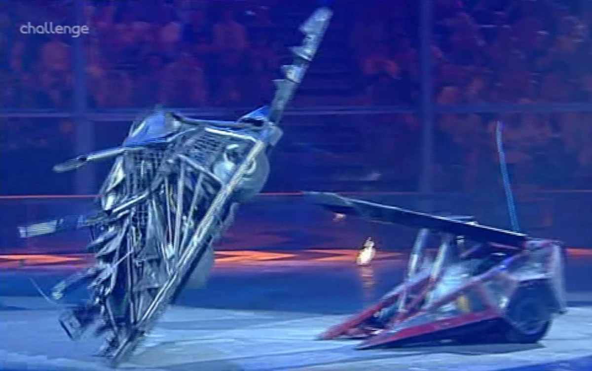
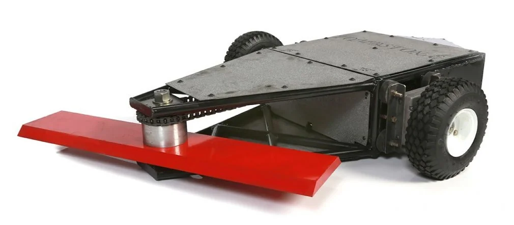
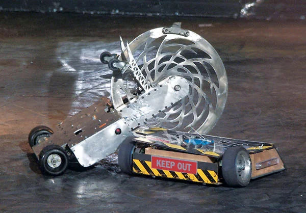
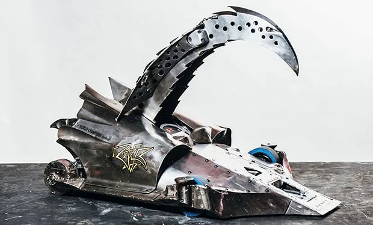

Радиоуправляемые убийцы: мегаботы и российская битва роботов
В августе 2017 года состоится первая в истории дуэль гигантских роботов. На одной арене сойдутся японский Kuratas и американский MegaBots Mk III. Зрелище должно получиться эпичным: к противостоянию шестиметровых бойцов разработчики готовились два года.
This is узнал у организатора российской битвы роботов - компании Promobot - и у одного из победителей первого турнира — Максима Гиляева, как проходят сражения стальных гладиаторов и до чего может дойти робототехника.
Будущее боевых роботов
По мнению триумфатора битвы позапрошлого года Максима Гиляева, мир российских боевых роботов сильно изменился. Раньше для турнира большинство команд стремились создавать машины, уничтожающие противников. Сегодня же к железным рестлерам относятся бережнее: робот просто лишает соперника возможности двигаться, переворачивая его вверх тормашками. Однако на зрелищности мероприятия это почти не отразилось.
Вместе с уровнем технологий повысился и интерес к робототехнике. Многое из того, что казалось невозможным взрослому любителю "поиграть с трансформерами" лет 10 назад, сейчас доступно даже детям. Появились игрушки-конструкторы (тот же Lego Mindstorms), с помощью которых ребята могут обучаться робототехнике и даже собирать собственные устройства.
По словам Гиляева, уже появляются роботы, похожие на человека или животное не только внешне. Один из последних примеров — робот по имени Handle, который напоминает гибрид лошади с гироскутером.
Основная проблема, которая мешает создать похожего на человека киборга, — это разработка адекватной математической модели разума и автономного источника питания. Но с учетом того, что появляются достаточно мощные компьютеры и емкие источники питания малого размера, андроид должен появиться примерно через 10 лет.
Если же говорить об огромных человекоподобных роботах (как в фильме "Аватар" или аниме "Евангелион"), то они существуют. Их называют мегаботами. По словам организаторов битвы роботов, такие устройства уже разработали США, Южная Корея, Япония и Китай. Один из них — японский Kuratas, которого мы как раз сможем увидеть в деле в августе 2017 года.
В основном мегаботов создают для разработки и тестирования приводных механизмов и новых электронных элементов. И хотя сейчас в военных целях они не используются, никто не может гарантировать, что этого не произойдет в обозримом будущем. Ведь если получится создать действительно эффективный боевой мегабот, то он вполне может поступить на вооружение в армии разных стран. (Все уже, наверное, представили, как робот из Северной Кореи угрожает австралийскому мегаботу жестокой расправой с помощью своей ядерной клешни.)
А пока огромные роботы только готовятся к своему первому сражению, их младшие братья уже вовсю воюют.
Битва роботов как вид спорта
Битва роботов - не просто турнир для гиков. Это мероприятие, которое по накалу напоминает боксерский поединок. Рефери анонсируют противников, девушки в бикини демонстрируют таблички с номером раунда и себя, мегаботы расходятся по разным углам ринга, а комментаторы очень эмоционально освещают поединок.
Некоторую театральность можно оправдать тем, что шоу — аналог рестлинга, только вместо актеров — килограммы винтов и гаек. Подобный формат еще в 90-е придумал Марк Торп — дизайнер компании, производящей игрушки из вселенной "Звездных войн". Идея пришла к нему после неудачной попытки создать радиоуправляемый пылесос. Наверное, поэтому большинство бойцов, участвующих в подобных схватках, напоминают радиоуправляемые машинки с оружием на борту.
Стальные чемпионы России
В 2015 году сразу три российские компании решили организовать аналогичные сражения роботов. Сначала в Москве турнир провела "Корпорация роботов", затем в Перми — компания Promobot совместно с Московским технологическом институтом.
Многие издания называют одного из победителей первого турнира — Максима Гиляева — капитаном команды робототехников XForce. Однако, по его словам, в их команде вообще нет главного.
Сегодня Максим применяет свои навыки программиста и конструктора в других областях. Вместе с коллегами, получив финансирование от GenerationS, он помогает инвалидам. Программисты и инженеры уже разработали устройство, которое распознает человеческую речь и переводит ее в шрифт Брайля. Оно позволяет общаться слепым, глухим и людям с обычным слухом и зрением.
Взаимопонимание было важно и для участников команды XForce во время соревнований. В 2015 году в команде было три участника, которые вместе создали будущего железного чемпиона: Максим руководил разработкой, остальные отвечали за программный код и сборку.
Однако сначала нужно было изучить соперников и понять, как использовать слабости их роботов. После этого — спроектировать электрическую схему. На следующем этапе — купить и проверить необходимые детали (в первую очередь — двигатели и электронику).
Обычно команды оборудуют своих электронных бойцов четырьмя видами оружия, которое наносит механический урон.
Подбрасыватели (flippers). Используются, чтобы обезоружить противника, перевернув его на спину. Бывают двух видов - пневматические и электрические, но чаще всего используют пневматику, потому что она лучше с точки зрения соотношения "цена — качество". Бывают еще гидравлические подбрасыватели, но они запрещены. Ведь если повредить гидролинию, выльется жидкость, что запрещено регламентом.


Горизонтально вращающееся пилы, сверла, "балки". Одно из самых популярных, мощных и изобретательных орудий этого типа называется "матанга" - вращающаяся "балка". Ее одним из первых стал использовать легендарный Tomberstone.
Вертикально вращающееся оружие. Позволяет подкидывать противника и проводить удары сверху вниз. В движение его приводит электродвигатель или двигатель внутреннего сгорания.


Ударное оружие. Бьет противника в горизонтальной плоскости. Как и в случае с подбрасывателями, чаще всего это пневматическое, а не электрическое оружие.
Бой по регламенту длится три минуты. Если оба робота остались "живы", победителя определяют так же, как в боксе: судьи считают количество ударов и степень повреждений участников. Но чаще всего одного из роботов успевают обездвижить: либо вывести из строя его приводные механизмы, либо перевернуть на спину или бок. При этом победитель должен остаться "на ногах".
Во время финальной битвы Гиляеву досталась интересная роль: он должен был управлять огнеметом. Два других участника "водили" робота и следили за температурой двигателя, зарядом батареи и уровнем напряжения. Когда в финале у механического гладиатора отказали шесть двигателей, игроки перевели его на резервное питание, продлив "жизнь" на 10-15 секунд. Так они смогли вырвать победу у довольно сильного противника.
XForce выиграла 300 тысяч рублей. Деньги победители поделили, компенсировав затраты на создание робота и покупку нового оборудования. Но победа негативно сказалась на команде. К соревнованию 2016 года, по словам Максима, они отнеслись более халатно, поэтому проиграли.
Будет ли команда участвовать в "Битве роботов-2017", которая пройдет в Перми в ноябре, пока не известно. This is будет следить за развитием событий и роботов.